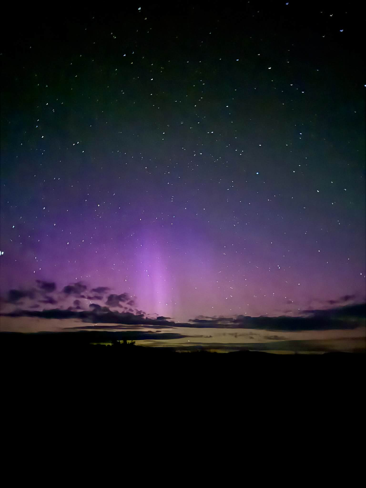
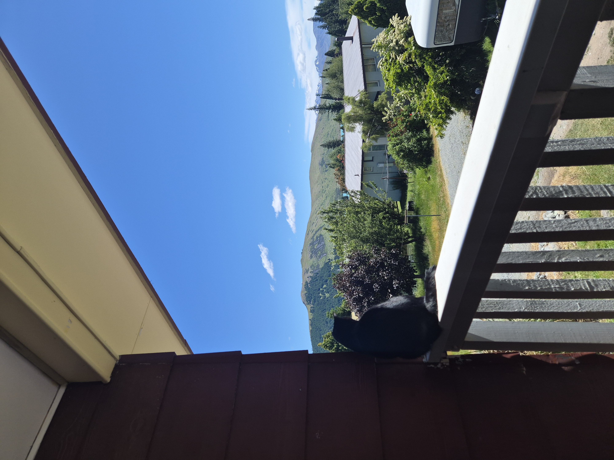
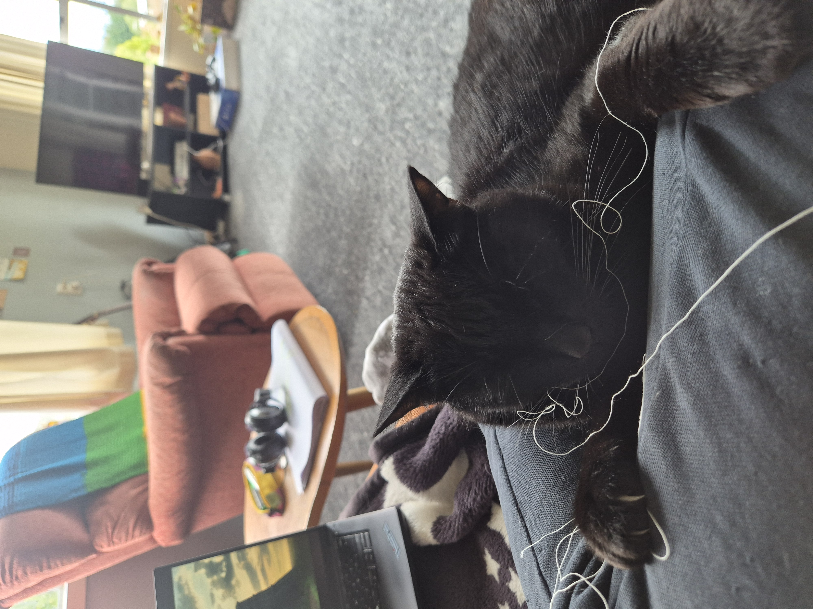
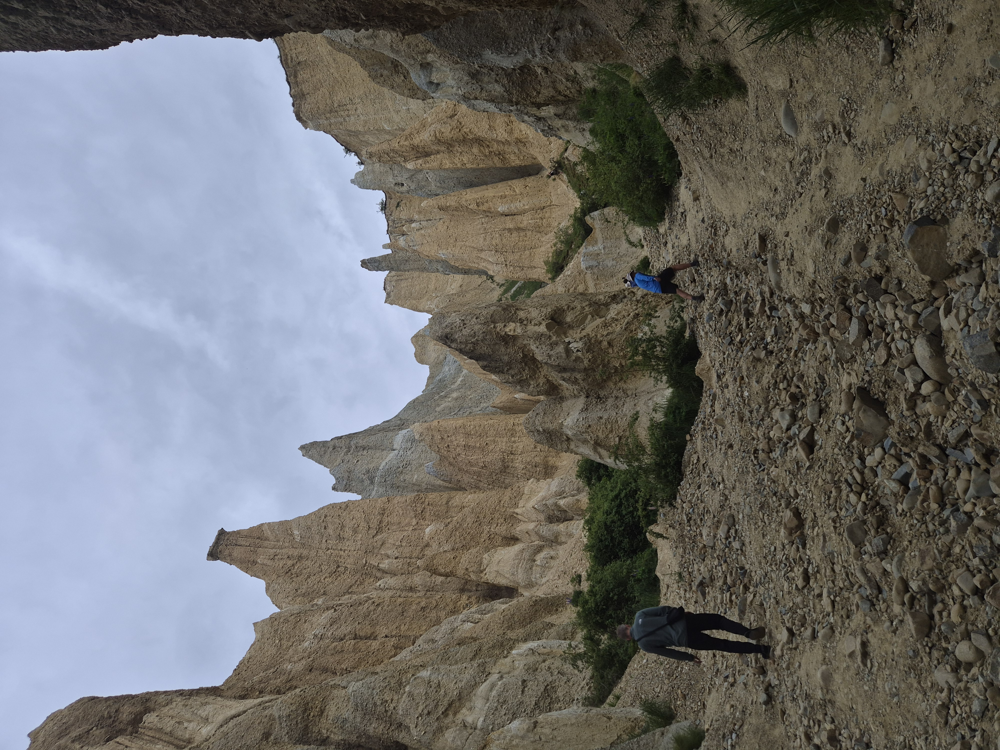
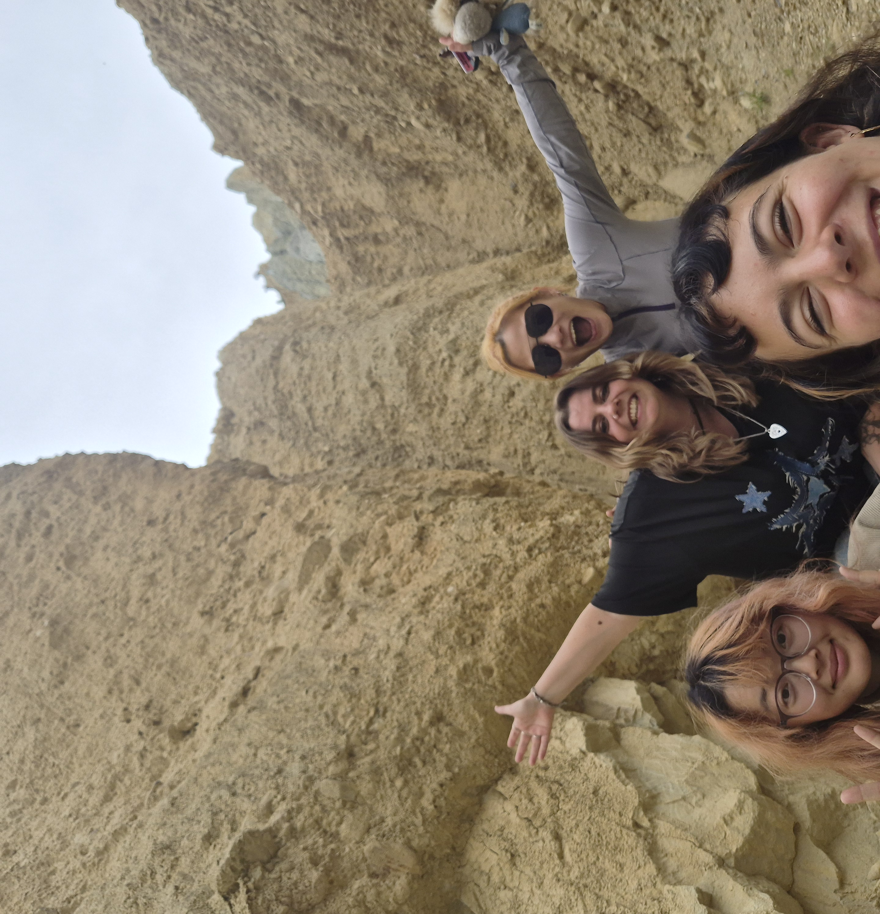
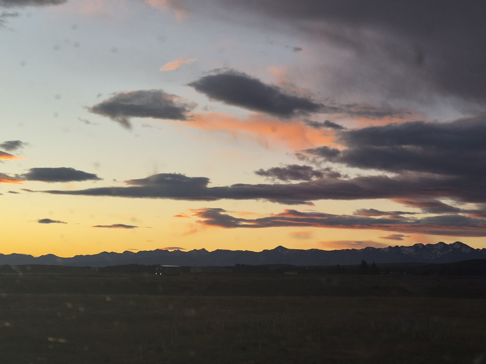
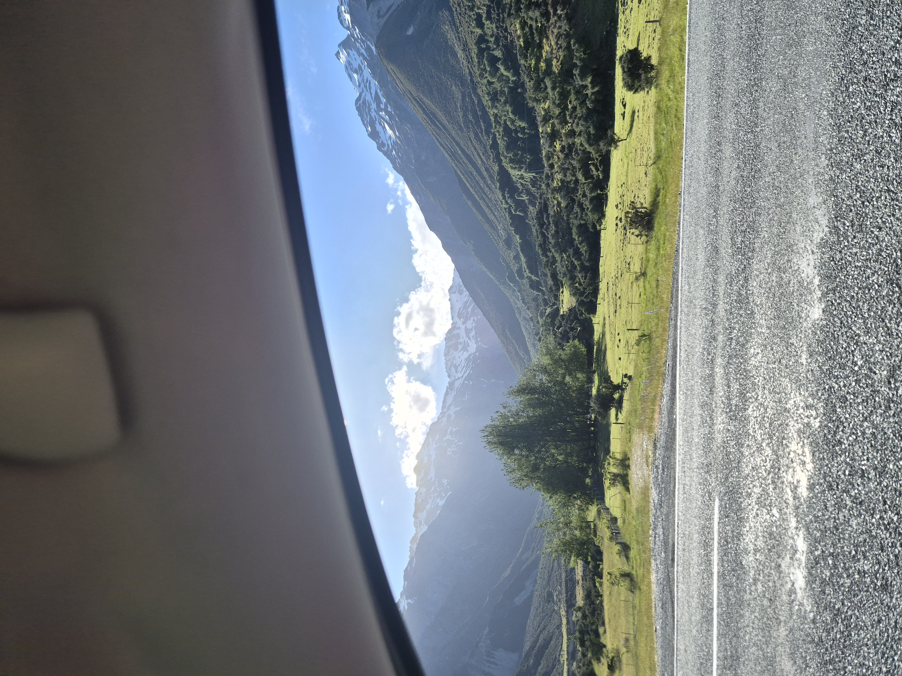
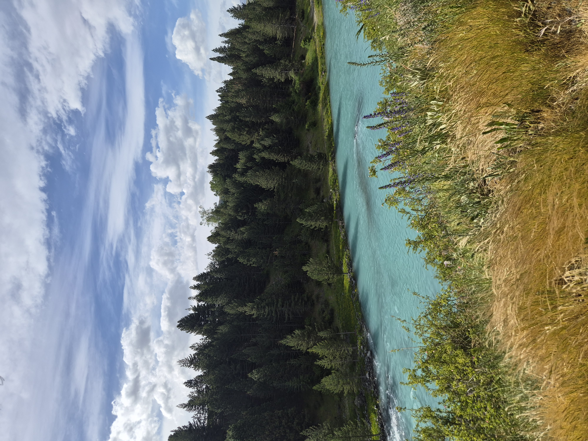
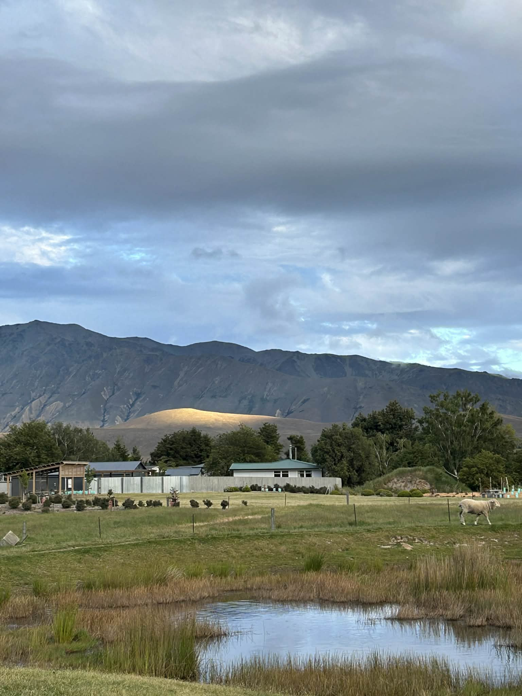
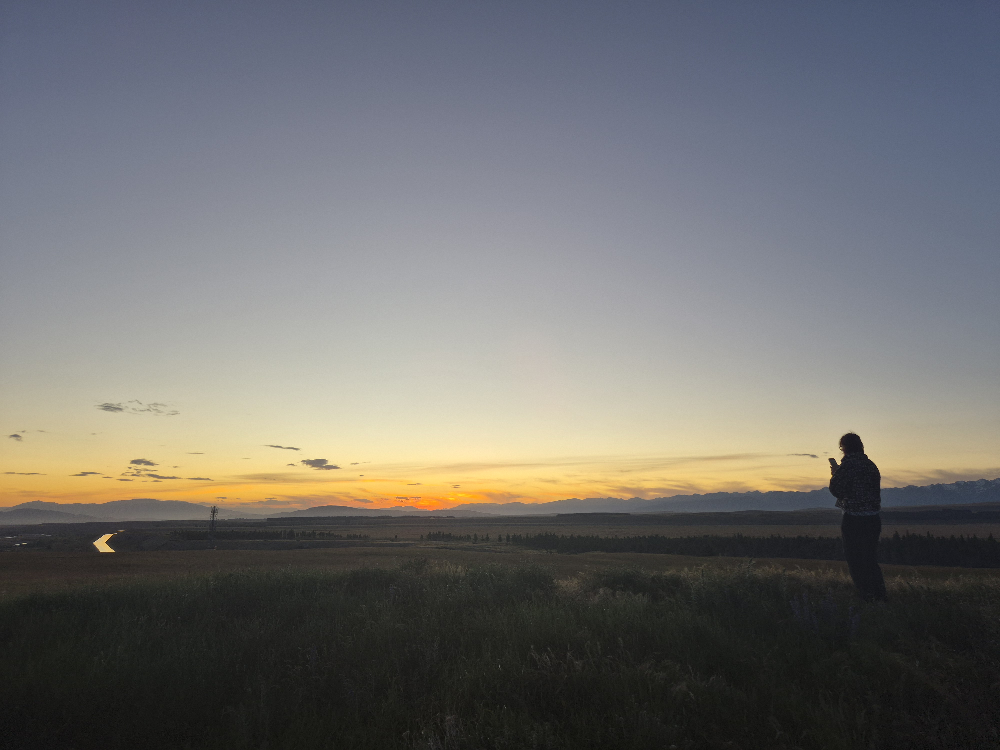

Not much to report just some very pretty colours and places. Went to the Clay cliffs which were very cool, apparently they filmed part of the live action Mulan here. We were very confused about this as the ground is very uneven so must have been difficult to film.










The Southern lights are out sometimes, very cool but I never get a good picture on my phone, so here is one taken by an Iphone. But my phone seems to be very good at capturing blues and greens so here are some nice pictures with those colours. Plus a dramatic one from a drive to mount cook.
On a cloudy day there was a bright sun ray on this specific part of the hill, which made it look likte it was glowing. Also sweet little cat that was helping me with my knitting!
Finally some pictures from my favourite time of day - sunsets!